EN
EN
รางวัลแห่งความภาคภูมิใจ
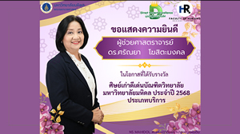
ขอแสดงความยินดี แด่ ผู้ช่วยศาสตราจารย์ ดร.ศรัณยา โฆสิตะมงคล
ในโอกาสได้รับรางวัล ศิษย์เก่าดีเด่นบัณฑิตวิทยาลัย มหาวิทยาลัยมหิดล ประจำปี 2568 ประเภทบริการ
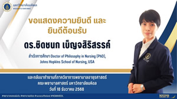
ขอแสดงความยินดี แด่ ดร.ชิดชนก เบ็ญจสิริสรรค์ สำเร็จการศึกษา
สำเร็จการศึกษา Doctor of Philosophy in Nursing (PhD,) Johns Hopkins School of Nursing, USA
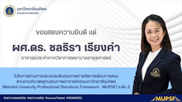
ขอแสดงความยินดี แด่ ผู้ช่วยศาสตราจารย์ ดร.ชลธิรา เรียงคำ ในโอกาสผ่านการประเมินระดับคุณภาพ ระดับ 2
ในโอกาสผ่านการประเมินระดับคุณภาพการจัดการเรียนการสอนตามเกณฑ์มาตรฐานอาจารย์ของมหาวิทยาลัย (Mahidol University Professional Standards Framework : MUPSF) ระดับ 2
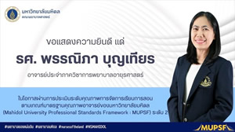
ขอแสดงความยินดี แด่ รองศาสตราจารย์ ดร.พรรณิภา บุญเทียร ในโอกาสผ่านการประเมินระดับคุณภาพ ระดับ 2
ในโอกาสผ่านการประเมินระดับคุณภาพการจัดการเรียนการสอนตามเกณฑ์มาตรฐานอาจารย์ของมหาวิทยาลัย (Mahidol University Professional Standards Framework : MUPSF) ระดับ 2
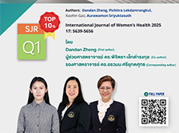
ขอแสดงความยินดี ผู้ช่วยศาสตราจารย์ ดร.พิจิตรา เล็กดำรงกุล (Co-author) และ รองศาสตราจารย์ ดร.อรวมน ศรียุกตศุทธ (Corresponding author) ได้รับการตีพิมพ์ในวารสารระดับนานาชาติ TOP 10% SJR Q1
Exploring theoretical models and frameworks used to explain factors influencing breast cancer screening participation: a scoping review
This summary of the models and frameworks employed to investigate factors influencing BCS over the past decade. These insights have significant implications for designing targeted healthcare interventions and informing policy changes to enhance global BCS participation and reduce disparities. Future refinements of these models are expected to improve their applicability and effectiveness across diverse populations and settings.
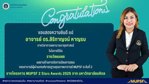
อาจารย์ ดร.สิริกาญจน์ หาญรบ ในโอกาสได้รับรางวัล ผลงานด้านการจัดการเรียนการสอน ของอาจารย์ ผู้ผ่านเกณฑ์มาตรฐานคุณภาพอาจารย์ MUPSF ระดับที่ 2
อาจารย์ ดร.สิริกาญจน์ หาญรบ ในโอกาสได้รับรางวัล ผลงานด้านการจัดการเรียนการสอน ของอาจารย์ ผู้ผ่านเกณฑ์มาตรฐานคุณภาพอาจารย์ MUPSF ระดับที่ 2 จากโครงการ MUPSF 2 Stars Awards 2025 จากมหาวิทยาลัยมหิดล
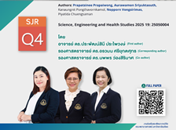
อาจารย์ ดร.ประพัฒน์สินี ประไพวงษ์ (First author) รองศาสตราจารย์ ดร.อรวมน ศรียุกตศุทธ (Corresponding author) รองศาสตราจารย์ ดร.นพพร ว่องสิริมาศ (Co-author) ได้รับการตีพิมพ์ SJR Q4
Self-management as a determinant of quality of life in Thai patients with continuous ambulatory peritoneal dialysis: A cross-sectional study
The current study aimed to determine whether certain variables, particularly self-management, were significantly associated with quality of life (QoL) among Thai patients receiving continuous ambulatory peritoneal dialysis (CAPD).
Authors: Prapatsinee Prapaiwong, Aurawamon Sriyuktasuth, Kanaungnit Pongthavornkamol, Nopporn Vongsirimas, Piyatida Chuengsaman
Science, Engineering and Health Studies 2025 19: 25050004
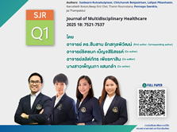
อาจารย์ ดร.สืบสาน รักสกุลพิวัฒน์ (First author, Corresponding author) อาจารย์ชิดชนก เบ็ญจสิริสรรค์ (Co-author) อาจารย์ลลิตภัทร เพียรหาสิน (Co-author) ได้รับการตีพิมพ์ SJR Q4
Effectiveness of discharge planning interventions for stroke and heart conditions: A systematic interventional studies
This review highlights the value of structured and innovative discharge planning models for clinical practice. Incorporating patient- and caregiver-centered strategies can reduce readmissions, strengthen adherence, and improve long-term health outcomes.
Authors: Suebsarn Ruksakulpiwat, Chitchanok Benjasirisan, Lalipat Phianhasin, Naruebeth Koson, Nway Eint Chei, Thanin Rounratana, Pennapa Saenkla, Jai Thampakkul
Journal of Multidisciplinary Healthcare 2025 18: 7521-7537
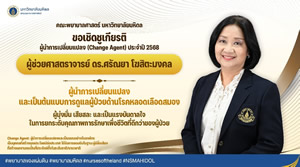
คณะพยาบาลศาสตร์ มหาวิทยาลัยมหิดล ขอเชิดชูเกียรติ รองศาสตราจารย์ ดร.ศรัณยา โฆสิตะมงคล ผู้นำการเปลี่ยนแปลง (Change Agent) ประจำปี 2568
ผู้นำการเปลี่ยนแปลงและเป็นต้นแบบในการดูแลผู้ป่วยด้านโรคหลอดเลือดสมอง ความมุ่งมั่น เสียสละ และเป็นแรงบันดาลใจ ในการยกระดับคุณภาพการรักษาเพื่อชีวิตที่ดีกว่าของผู้ป่วย "Change Agent" ผู้นำการเปลี่ยนแปลงและเป็นแบบอย่างในองค์กร เป็นบุคคลที่สร้างคุณประโยชน์ต่อประเทศได้รับการยอมรับในฐานะผู้มีชื่อเสียง ที่สร้างผลงานจนเป็นที่ประจักษ์ทั้งในระดับชาติและนานาชาติ
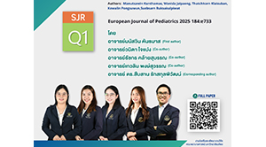
อาจารย์ ดร.สืบสาน รักสกุลพิวัฒน์ และ อาจารย์เกวลิน พงษ์สุวรรณ ได้รับการตีพิมพ์ SJR Q1
The effect of parental involvement intervention on quality of life and health outcomes among children and adolescents with chronic illness: A systematic review and meta-analysis. The study provides comprehensive evidence that parental involvement interventions significantly improve quality of life and health-related outcomes among children and adolescents with chronic illnesses, particularly when they are shorter in duration and nurse-led.
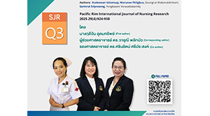
รองศาสตราจารย์ ดร.ศรินรัตน์ ศรีประสงค์ และผู้ช่วยศาสตราจารย์ ดร.วารุณี พลิกบัว ได้รับการตีพิมพ์ SJR Q3
The influences of social determinants of health on health-related quality of life in people with hypertension: Across-sectional study
Nurses should promote health literacy by encouraging people to obtain information from accurate and reliable sources. Encouraging people to recognize the importance of having and using adequate resources in the neighborhood for their illness, and to identify obstacles to accessing treatment to promote a healthy quality of life in people with hypertension.
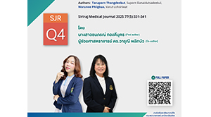
ผู้ช่วยศาสตราจารย์ ดร.วารุณี พลิกบัว ได้รับการตีพิมพ์ SJR Q4
Impact of social determinants of health on postoperative health-related quality of life among patients undergoing colorectal cancer surgery
Nurses should develop practice guidelines to promote HRQoL in postoperative CRV patients after discharge by screening financial status, body mass index, anxiety, and family support.
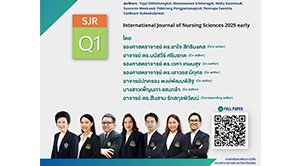
อาจารย์ ดร.สืบสาน รักสกุลพิวัฒน์ ได้รับการตีพิมพ์ SJR Q1
Enhancing accessibility through Nurse-Led Clinic in primary care: An integrative review of models of care
Nurse-led models of care are crucial for strengthening primary healthcare, particularly in underserved settings. Further research and policy support are needed to expand nurse’ roles, enhance their competencies, and promote interdisciplinary collaboration for the delivery of sustainable and equitable health services.
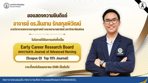
อาจารย์ ดร.สืบสาน รักสกุลพิวัฒน์ ในโอกาสได้รับการแต่งตั้งให้เป็น “Early Career Research Board”
อาจารย์ ดร.สืบสาน รักสกุลพิวัฒน์ ในโอกาสได้รับการแต่งตั้งให้เป็น “Early Career Research Board” ของวารสาร Journal of Advanced Nursing (Scopus Q1 Top 10% Journal) วาระตั้งแต่เดือนมกราคม 2569 เป็นต้นไป
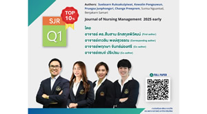
ขอแสดงความยินดี อาจารย์ ดร.สืบสาน รักสกุลพิวัฒน์ อาจารย์เกวลิน พงษ์สุวรรณ และอาจารย์พฤกษา จันทร์ผ่องศรี ได้รับการตีพิมพ์ในวารสารนานาชาติ SJR Q1 TOP 10%
Nurse-Led interventions to improve health, adherence, and functional outcomes in adults and older adults with multimorbidity: A systematic review of randomized and quasi experimental studies. The results highlight nurses' key role in coordinating and delivering effective care. By promoting self-management and adherence, nurse-led models serve as a foundation for managing complex chronic conditions. Broader implementation can improve outcomes and reduce healthcare burdens. โดยอาจารย์ ดร.สืบสาน รักสกุลพิวัฒน์ (First author) อาจารย์เกวลิน พงษ์สุวรรณ (Corresponding author) อาจารย์พฤกษา จันทร์ผ่องศรี (Co-author) | Journal of Nursing Management 2025 early
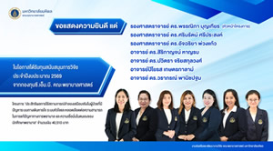
ขอแสดงความยินดี รองศาสตราจารย์ ดร.พรรณิภา บุญเทียร รองศาสตราจารย์ ดร.ศรินรัตน์ ศรีประสงค์ รองศาสตราจารย์ ดร.อัจฉริยา พ่วงแก้ว อาจารย์ ดร.สิริกาญจน์ หาญรบ อาจารย์ ดร.ปวิตรา จริยสกุลวงศ์ อ.ปิโยรส เกษตรกาลาม์ และอาจารย์ ดร.วราภรณ์ พานิชปฐม
ในโอกาสได้รับรางวัลทุนสนับสนุนการวิจัย ประจำปีการศึกษา 2569 จากกองทุน ซี.เอ็ม.บี คณะพยาบาลศาสตร์ โครงการ “ประสิทธิภาพการใช้สถานการณ์จำลองเสมือนจริงในผู้ป่วยที่มีปัญหาระบบทางเดินหายใจ ระบบหัวใจและหลอดเลือดต่อความสามารถในการแก้ปัญหาทางการพยาบาล และความเชื่อมั่นในตนเองของนักศึกษาพยาบาล” จำนวนเงิน 40,510 บาท
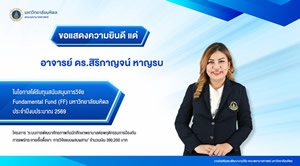
ขอแสดงความยินดี อาจารย์ ดร.สิริกาญจน์ หาญรบ
ในโอกาสได้รับทุนสนับสนุนการวิจัย Fundamental Fund (FF) มหาวิทยาลัยมหิดล ประจำปีการศึกษา 2568 โครงการ “ระบบการพัฒนาศักยภาพกับนักศึกษาต่อพฤติกรรมการป้องกันการแพร่กระจายเชื้อดื้อยา : การวิจัยแบบผสมผสาน” จำนวนเงิน 390,200 บาท
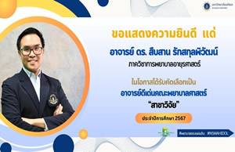
ขอแสดงความยินดี อาจารย์ ดร.สืบสาน รักสกุลพิวัฒน์
ในโอกาสได้รับคัดเลือกเป็น อาจารย์ดีเด่นคณะพยาบาลศาสตร์ “สาขาวิจัย” ประจำปีการศึกษา 2567”
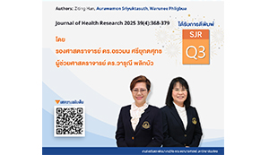
รองศาสตราจารย์ ดร.อรวมน ศรียุกตศุทธ และ ผู้ช่วยศาสตราจารย์ ดร.วารุณี พลิกบัว ได้รับการตีพิมพ์ SJR Q3
Health-related quality of life of patients with and without diabetes on hemodialysis in China: A comparative correlational study
“Hemodialysis patients with diabetes face significantly poorer quality of life than those without the condition. Age, gender, and family support play critical roles, pointing to the need for targeted, family-centered interventions”
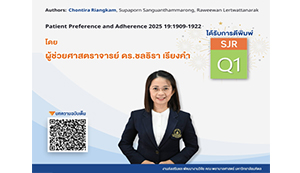
ผู้ช่วยศาสตราจารย์ ดร.ชลธิรา เรียงคำ ได้รับการตีพิมพ์ SJR Q1
Determinants of glycemic control in Thai adults with insulin-treated type 2 diabetes mellitus: A cross-sectional study
“Improving glycemic control in insulin-treated Thai adults requires strengthening self-management skills, addressing negative insulin attitudes, and promoting proper injection techniques with regular blood glucose monitoring. These strategies enhance outcomes and empower patients in managing chronic conditions"
Authors: Chontira Riangkam, Supaporn Sanguanthammarong, Raweewan Lertwattanarak | Patient Preference and Adherence 2025 19:1909-1922
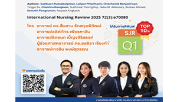
อาจารย์ ดร.สืบสาน รักสกุลพิวัฒน์, อาจารย์ลลิต์ภัทร เพียรหาสิน, อาจารย์ชิดชนก เบ็ญจสิริสรรค์ ผู้ช่วยศาสตราจารย์ ดร.ชลธิรา เรียงคำ และ อาจารย์เกวลิน พงษ์สุวรรณ
ได้รับการตีพิมพ์ SJR Q1
Artificial intelligence in nursing research: a systematic review of applications, benefits, and challenges
“This review highlights how AI enhances nursing research through prediction, efficiency, and personalization. It also raises concerns about ethics, bias, and data reliability. The authors call for nurse engagement and clear governance to ensure safe integration"
Authors: Suebsarn Ruksakulpiwat, Lalipat Phianhasin, Chitchanok Benjasirisan, Tingyu Su, Chontira Riangkam, Sutthinee Thorngthip, Heba M. Aldossary, Bootan Ahmed, Kewalin Pongsuwun, Nopasit Angkaew | International Nursing Review 2025 72(3):e70080
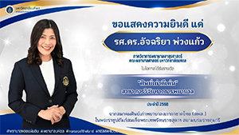
ขอแสดงความยินดี แด่ รองศาสตราจารย์ ดร.อัจฉริยา พ่วงแก้ว อาจารย์ประจำภาควิชาการพยาบาลอายุรศาสตร์
ในโอกาสได้รับรางวัล “ศิษย์เก่าดีเด่น” สาขาการวิจัยทางการพยาบาล ประจำปี 2568 จากสมาคมศิษย์เก่าพยาบาลสภากาชาดไทย (สพส.) ในพระราชูปถัมภ์สมเด็จพระเทพรัตนราชสุดาฯ สยามบรมราชกุมารี
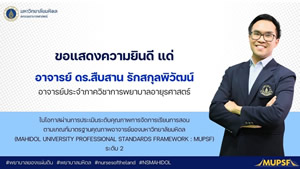
ในโอกาสผ่านการประเมินคุณภาพการจัดการเรียนการสอนตามเกณฑ์มาตรฐานคุณภาพอาจารย์ของมหาวิทยาลัยมหิดล
ขอแสดงความยินดี แด่ อาจารย์ ดร.สืบสาน รักสกุลพิวัฒน์ อาจารย์ประจำภาควิชาการพยาบาลอายุรศาสตร์ ในโอกาสผ่านการประเมินระดับคุณภาพการจัดการเรียนการสอน ตามเกณฑ์มาตรฐานคุณภาพอาจารย์ของมหาวิทยาลัยมหิดล (MAHIDOL UNIVERSITY PROFESSIONAL STANDARD FRAMEWORK : MUPSF) ระดับ 2
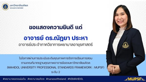
ในโอกาสผ่านการประเมินคุณภาพการจัดการเรียนการสอนตามเกณฑ์มาตรฐานคุณภาพอาจารย์ของมหาวิทยาลัยมหิดล
ขอแสดงความยินดี แด่ อาจารย์ ดร.ณัฏยา ประหา อาจารย์ประจำภาควิชาการพยาบาลอายุรศาสตร์ ในโอกาสผ่านการประเมินระดับคุณภาพการจัดการเรียนการสอน ตามเกณฑ์มาตรฐานคุณภาพอาจารย์ของมหาวิทยาลัยมหิดล (MAHIDOL UNIVERSITY PROFESSIONAL STANDARD FRAMEWORK : MUPSF) ระดับ 2
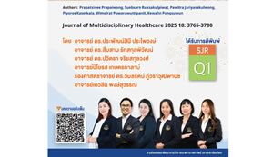
อาจารย์ ดร.ประพัฒน์สินี ประไพวงษ์, อาจารย์ ดร.สืบสาน รักสกุลพิวัฒน์, อาจารย์ ดร.ปวิตรา จริยสกุลวงศ์, อาจารย์ปิโยรส เกษตรกาลาม, รองศาสตราจารย์ ดร.วิมลรัตน์ ภู่วราวุฒิพานิช และ อาจารย์เกวลิน พงษ์สุวรรณ ได้รับการตีพิมพ์ SJR Q1
Determinants of anemia among patients with chronic kidney disease: A systematic review of empirical evidence
“This review underscores multifaceted determinants of anemia in CKD, emphasizing comprehensive assessment and targeted interventions. Future research should explore individualized strategies addressing these diverse factors"
Authors: Prapatsinee Prapaiwong, Suebsarn Ruksakulpiwat, Pawitra Jariyasakulwong, Piyoros Kasetkala, Wimolrat Puwarawuttipanit, Kewalin Pongsuwun | Journal of Multidisciplinary Healthcare 2025 18: 3765-3780
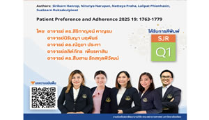
อาจารย์ ดร.สิริกาญจน์ หาญรบ, อาจารย์ ดร.ณัฏยา ประหา, อาจารย์ลลิตภัทร เพียรหาสิน และ อาจารย์ ดร.สืบสาน รักสกุลพิวัฒน์ ได้รับการตีพิมพ์ SJR Q1
The impact of self-management interventions on behavioral and clinical outcomes in individuals with systemic lupus erythematosus: A systematic review of empirical evidence from 2003-2024
“Self-management interventions positively impact behavioral and clinical outcomes in individuals with SLE. Future research should explore long-term sustainability, integration of digital health strategies, and personalized approaches"
Authors: Sirikarn Hanrop, Nirunya Narupan, Nattaya Praha, Lalipat Phianhasin, Suebsarn Ruksakulpiwat | Patient Preference and Adherence 2025 19: 1763-1779
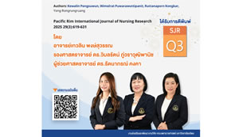
อาจารย์เกวลิน พงษ์สุวรรณ รองศาสตราจารย์ ดร.วิมลรัตน์ ภู่วราวุฒิพานิช และ ผู้ช่วยศาสตราจารย์ ดร.รัตนาภรณ์ คงคา ได้รับการตีพิมพ์ SJR Q3
Factors predicting sleep quality in sepsis survivors: A cross-sectional study
“Nurses should assist sepsis survivors through psychological support, understanding, and information to reduce anxiety, depression, stress, complications, or severity of comorbidities"
Authors: Kewalin Pongsuwun, Wimolrat Puwarawuttipanit, Ruttanaporn Kongkar, Yong Rongrungruang | Pacific Rim International Journal of Nursing Research 2025 29(3):619-631
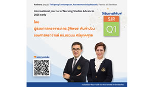
รองศาสตราจารย์ ดร.อรวมน ศรียุกตศุทธ ได้รับการตีพิมพ์ SJR Q1
Translation and validation of the Chinese version of quality of physician- patient interaction scale
"The QQPPI-C is a reliable and valid tool for assessing outpatient physician-patient interaction quality in China. Its use can support clinical communication improvement and research on patient-centered care"
Authors: Jing Li, Aurawamon Sriyuktasuth, Patricia M. Davidson | International Journal of Nursing Studies Advances 2025 early
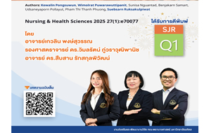
รองศาสตราจารย์ ดร.วิมลรัตน์ ภู่วราวุฒิพานิช อาจารย์ ดร.สืบสาน รักสกุลพิวัฒน์ และ อาจารย์เกวลิน พงษ์สุวรรณ ได้รับการตีพิมพ์ SJR Q1
A systematic review of the accuracy of machine learning models for diagnosing pulmonary tuberculosis: implications for nursing practice and implementation
“Machine learning is transforming tuberculosis diagnosis-enhancing accuracy, supporting nursing practice, and addressing diagnostic challenges in complex clinical cases”
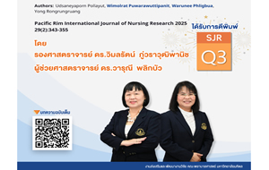
รองศาสตราจารย์ ดร.วิมลรัตน์ ภู่วราวุฒิพานิช และ ผู้ช่วยศาสตราจารย์ ดร.วารุณี พลิกบัว ได้รับการตีพิมพ์ SJR Q3
Activities of daily living and determinant factors among sepsis survivors during hospitalization: a cross-sectional study
“Age, sleep quality, and sepsis survivors-emphasizing the need for targeted nursing care to enhance recovery”
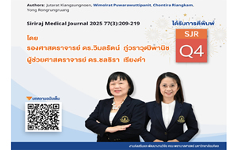
รองศาสตราจารย์ ดร.วิมลรัตน์ ภู่วราวุฒิพานิช และ ผู้ช่วยศาสตราจารย์ ดร.ชลธิรา เรียงคำ ได้รับการตีพิมพ์ SJR Q4
Effectiveness of a brain training program on the cognitive function of sepsis survivors: a randomized controlled trial study
“A brain training program significantly enhances cognitive function in sepsis survivors within 12 weeks-highlighting its potential as a vital rehabilitation strategy”
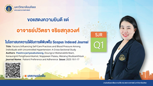
ในโอกาสบทความได้รับการตีพิมพ์ใน Scopus Indexed Journal SJR Q1
อาจารย์ปวิตรา จริยสกุลวงศ์ ในโอกาสบทความได้รับการตีพิมพ์ใน Scopus Indexed Journal SJR Q1
Title: Factors Influencing Self-Practices and Blood Pressure Among Individuals with Uncontrolled Hypertension: A Cross-Sectional Study
Authors: Pawitra Jariyasakulwong, Doungrut Wattanakitkrilert, Kanaungnit Pongthavornkamol, Noppawan Piaseu, Weranuj Roubsanthisuk
Journal Name: Patient Preference and Adherence Issue: 2025 19:1-17
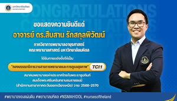
ในโอกาสได้รับการแต่งตั้งให้เป็น “กองบรรณาธิการวารสารการพยาบาลและการดูแลสุขภาพ”
อาจารย์ ดร.สืบสาน รักสกุลพิวัฒน์ ในโอกาสได้รับการแต่งตั้งให้เป็น “กองบรรณาธิการวารสารการพยาบาลและการดูแลสุขภาพ” TCI1 สมาคมพยาบาลแห่งประเทศไทยในพระราชูปถัมภ์ สมเด็จพระศรีนครินทราบรมราชชนนี (สำนักงานสาขาภาคตะวันออกเฉียงเหนือ) วาระ 2568-2570
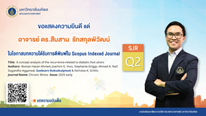
ในโอกาสบทความได้รับการตีพิมพ์ใน Scopus Indexed Journal SJR Q2
อาจารย์ ดร.สืบสาน รักสกุลพิวัฒน์ ในโอกาสบทความได้รับการตีพิมพ์ใน Scopus Indexed Journal SJR Q2
Title: A concept analysis of the recurrence-related to diabetic foot ulcers
Authors: Bootan Hasan Ahmed, Joachim G. Voss, Stephanie Griggs, Ahmed A. Naif, Sugandha Aggarwal, Suebsarn Ruksakulpiwat & Nicholas K.Schiltz
Journal Name: Chronic Illness Issue: 2025 early
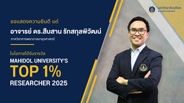
ในโอกาสได้รับรางวัล TOP 1% RESEARCHER 2025
อาจารย์ ดร.สืบสาน รักสกุลพิวัฒน์ ในโอกาสได้รับรางวัล TOP 1% RESEARCHER 2025
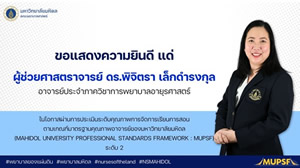
ในโอกาสผ่านการประเมินคุณภาพการจัดการเรียนการสอนตามเกณฑ์มาตรฐานคุณภาพอาจารย์ของมหาวิทยาลัยมหิดล
ผู้ช่วยศาสตราจารย์ ดร.พิจิตรา เล็กดำรงกุล ในโอกาสผ่านการประเมินคุณภาพการจัดการเรียนการสอน ตามเกณฑ์มาตรฐานคุณภาพอาจารย์ของมหาวิทยาลัยมหิดล (MAHIDOL UNIVERSITY PROFESSIONAL STANDARDS FRAMEWORK : MUPSF ) ระดับ 2
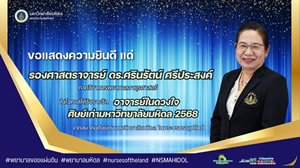
ในโอกาสได้รับรางวัล อาจารย์ในดวงใจ ศิษย์เก่ามหาวิทยาลัยมหิดล ประจำปี 2568
รองศาสตราจารย์ ดร.ศรินรัตน์ ศรีประสงค์ ในโอกาสได้รับรางวัล อาจารย์ในดวงใจ ศิษย์เก่ามหาวิทยาลัยมหิดล ประจำปี 2568 จาก ศิษย์เก่ามหาวิทยาลัยมหิดล 2568 จากสมาคมศิษย์เก่ามหาวิทยาลัยมหิดล ในพระบรมราชูปถัมภ์